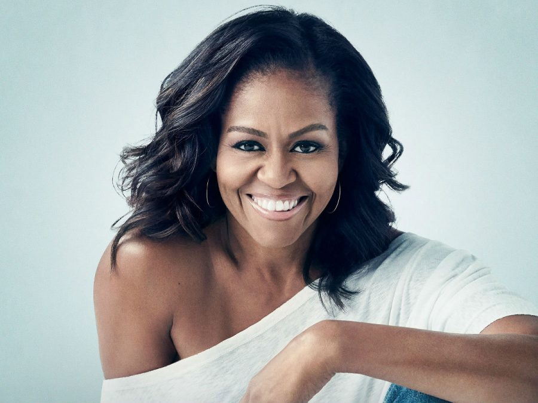

Michelle Obama

Summary
As first lady, I served as a role model for women and worked as an advocate for poverty awareness, education, nutrition, physical activity, and healthy eating. I support American designers and am considered a fashion icon. I was the first African-American woman to serve as first lady.
Education
- B.A. Sociology - Princeton University (1981 - 1985)
- Juris Doctor - Harvard Law School (1988)
Work Experince
Summer Associate - Sidley Austin LLP (Law Firm)
1988 - 1991
- Michelle Obama began her legal career as an associate at the law firm Sidley Austin in Chicago after graduating from Harvard Law School.
Assistant Commissioner - City of Chicago (Public Sector)
1991 - 1993
- After her time at Sidley Austin, Michelle Obama served as an assistant commissioner in the City of Chicago's Department of Planning and Development.
Executive Director - Public Allies (Non-Profit)
1993 - 1996
- Michelle Obama served as the Executive Director of Public Allies Chicago, a non-profit organization focused on developing young leaders for the public sector.
Assoc. Dean of Student Services - University of Chicago (Academia)
1996 - 2002
- Michelle Obama worked at the University of Chicago as the Associate Dean of Student Services and the Executive Director for Community Affairs.
Vice President for Community and External Affairs - University of Chicago Medical Center (Non-Profit)
2005 - 2008
- Michelle Obama worked as the Vice President for Community and External Affairs at the University of Chicago Medical Center, where she developed programs to improve community health.
Skills
- Public Speaking
- Advocacy and Leadership
- Writing
Awards and Certifications
- Grammy Award -Best Spoken Word Album (2019)
Other
Hobbies
Contact Information